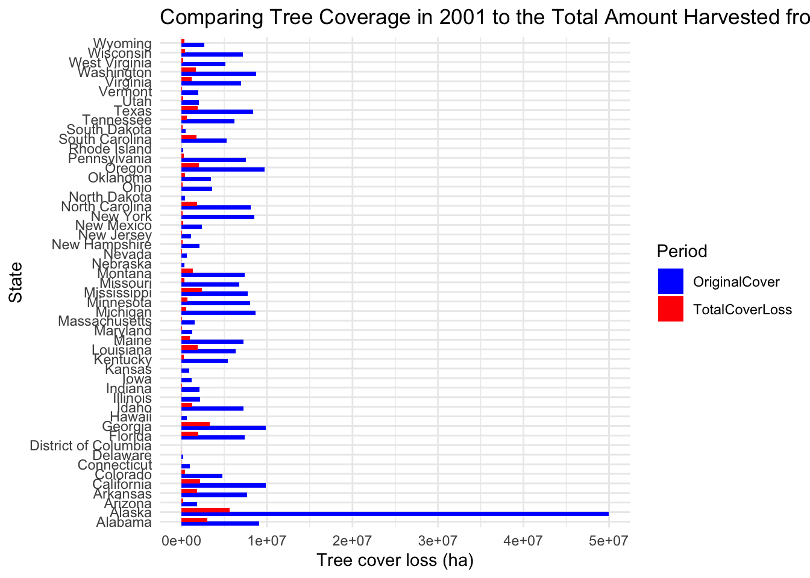
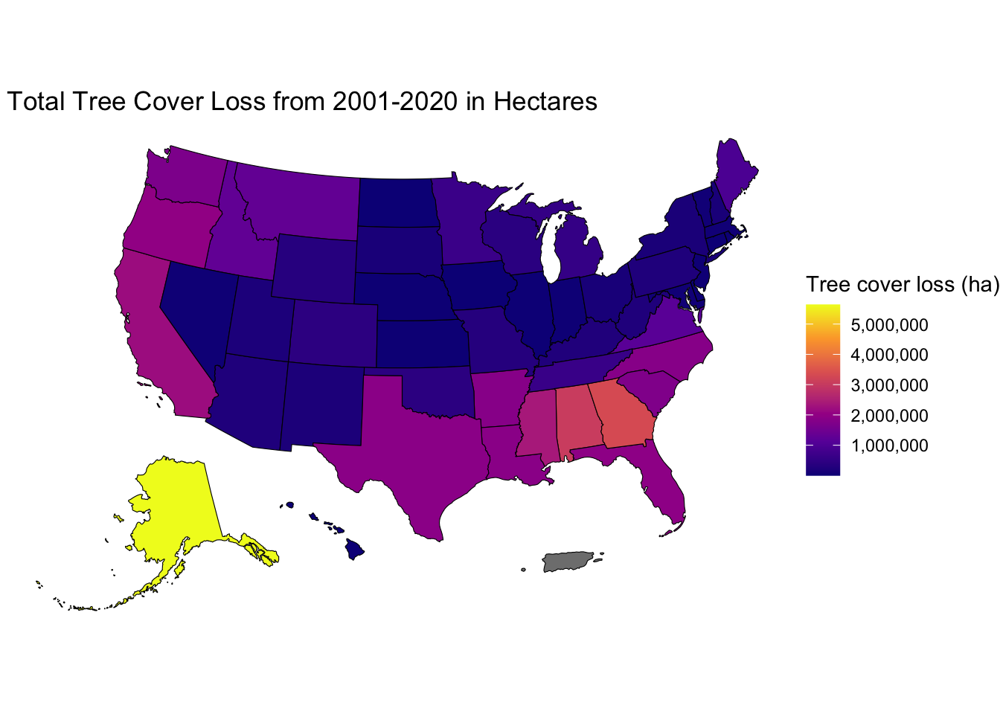
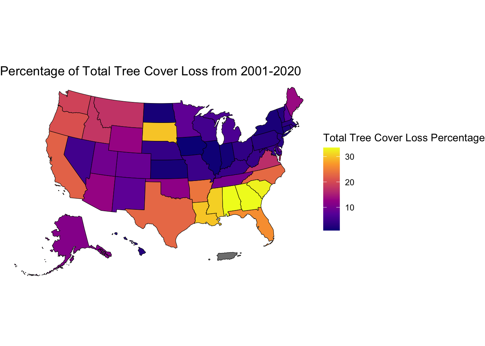

In this post we will be analyzing deforestation across the United States. The data is from Worldrainforests.com, an extension of mongabay news, which provides global details about deforestion. For this blog the site provides the data of how many hectares of tree cover has the United States lost since 2001.
We are most interested in the Sub-national admin area 1, Tree cover loss(2001-05)ha, Tree cover loss(2006-10)ha, Tree cover loss(2011-15)ha, Tree cover loss(2016-20)ha, Tree cover loss(2001-20)ha, and Tree cover loss(2001-20)%’ variables, which I have renamed and recoded to be easier to understand. There are a total of 51 entries in the in data set, pretaining to each of the 50 states and the District of columbia, while there are 7 columns that represent the control tree cover, 5 year increments of tree cover loss, total cover loss, and percent cover loss. My main question for this project was, How does the amount of timber harvested compare to the amount of tree cover the states had in 2001?
The links for the data webpages are here. https://worldrainforests.com/deforestation/archive/United_States.htm
Visualizations:
##Extent vs loss Graphicggplot(data = timberfordiff, aes(x = state, y = hectares, fill = When))+geom_col(position =position_dodge(width =0.8)) +labs(x ="State", y ="Tree cover loss (ha)", fill ="Period") +theme_minimal()+coord_flip()+scale_fill_manual(values =c(OriginalCover ="blue",TotalCoverLoss ="red"))+labs(title ="Comparing Tree Coverage in 2001 to the Total Amount Harvested from 2001-2020")

##Cover loss by hectersggplot(state_full) +geom_sf(aes(fill = TotalCoverLoss), color ="black") +theme_void() +scale_fill_viridis_c(option ="plasma",name ="Tree cover loss (ha)", labels = comma)+labs(title =" Total Tree Cover Loss from 2001-2020 in Hectares")

##Cover loss by percentggplot(state_full) +geom_sf(aes(fill = Loss_percent), color ="black") +theme_void() +scale_fill_viridis_c(option ="plasma",name ="Total Tree Cover Loss Percentage", labels = comma)+labs(title ="Percentage of Total Tree Cover Loss from 2001-2020")

Some interesting findings include, the state that harvests the most timber is Alaska, however by percent of cover loss Alaska has approximately 12-15 percent loss. Similarly, Florida harvests far less wood than many states by hectares, but by percent of forest cover they are far higher than the national average. Lastly, Georgia has both a high tree cover loss in hectares statistic, and a high tree cover loss percentage, which means that they produce alot of timber while also draining their natural resources far more than all other states.
Conclusion:
The flaws of this data however is that it did not include the type of deforestation and cutting practices each state uses, which would have been very compelling to see how different cutting processes impact how much timber is harvested. If I had additional time and data I woukd have liked to map out the different types of clear cutting and states average hectares per year cleared, I beleive these would create a more rounded and well informed visualization.
Connection to class ideas:
By creating a visual which had values starting at zero I was able to create a more honest depiction of the data. By Coord flipping I made the bar graph more easy to understand. I mapped the data onto the United States including Alaska and Hawaii because I knew they would be important to visualize. I also had to recode the data to double instead of characters, while also removing the % sign which caused me trouble. I also scrapped data from websites and joined multiple data sets together to create my visualizations.